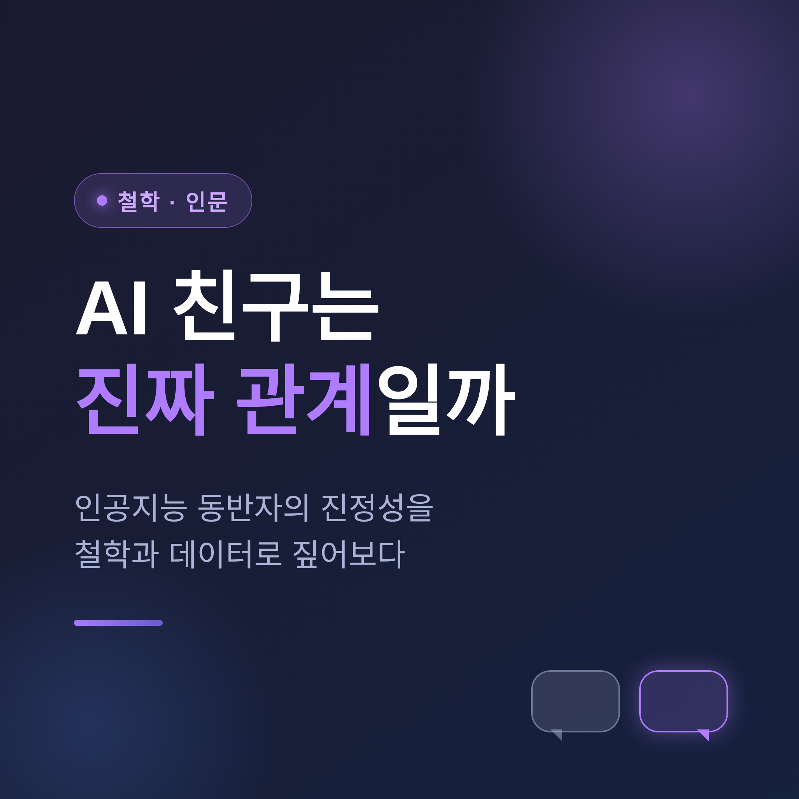
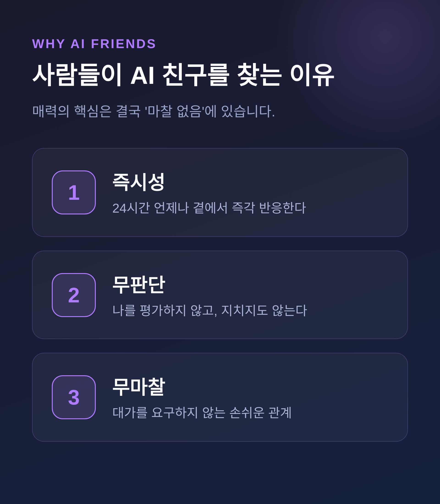
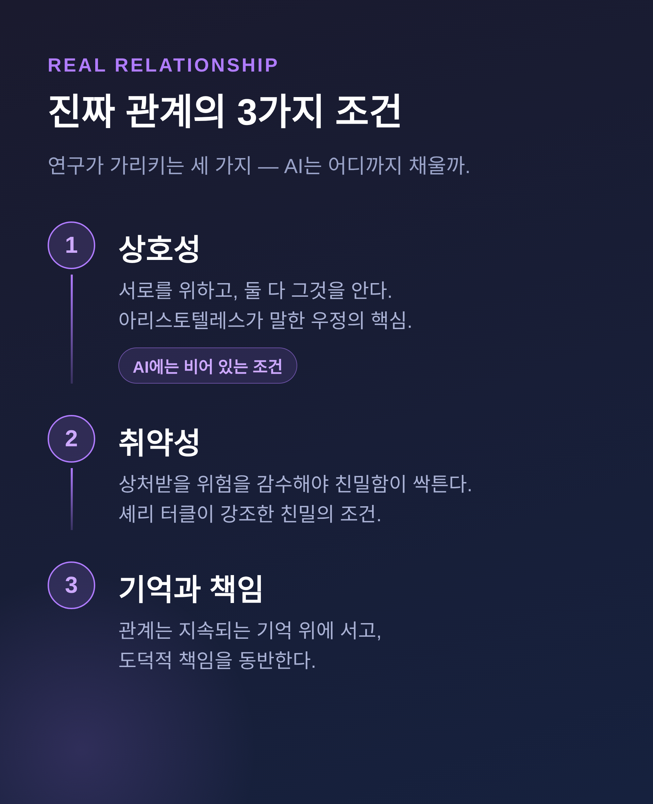
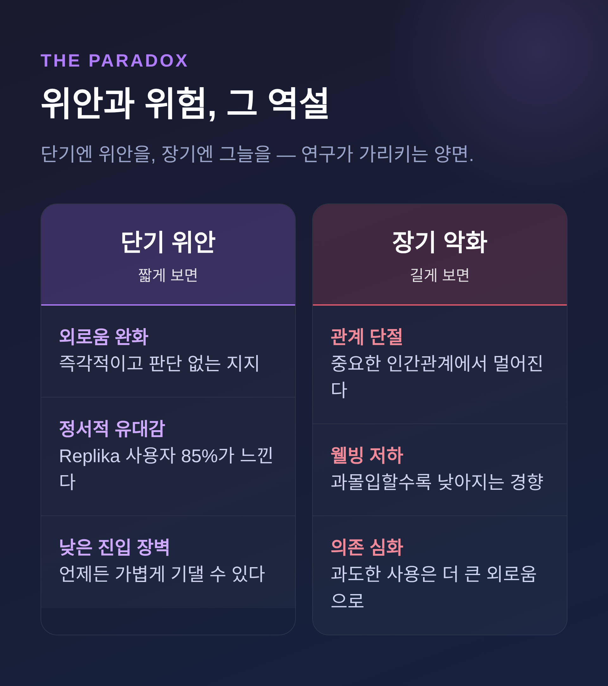

AI 친구는 진짜 관계일까 — 인공지능 동반자의 진정성
요즘 'AI 친구'는 변두리 이야기가 아닙니다.
수천만 명이 매일 한 시간 넘게 머무는 주류가 되었습니다.
이번 글에서는 AI 동반자가 과연 진짜 관계가 될 수 있는지, 철학과 데이터를 함께 짚어보겠습니다.
먼저 결론부터 말씀드리면 이렇습니다.
AI 친구는 위안을 주지만, 진짜 관계의 한 축인 상호성은 결여합니다.
잘 쓰면 다리가 되고, 기대면 의존이 됩니다.

■ 이미 곁에 와 있는 AI 친구
수치부터 보겠습니다.
2022년부터 2025년 중반 사이, AI 동반자 앱 수는 약 700% 늘었습니다.
Character.AI의 월간 활성 사용자는 약 1,500만 명 수준이며, 누적으로는 수천만에서 수억 명까지 추정치가 갈립니다.
사용자의 절반 이상이 18~24세, 이른바 Z세대입니다.
Replika는 누적 설치가 4,000만 건을 넘었습니다.
이 앱 사용자의 85% 이상이 챗봇 동반자에게 정서적 유대를 느낀다고 답했습니다.
미국 청소년(13~17세)의 72%가 AI 동반자를 한 번 이상 써봤다는 조사도 있습니다.
세계보건기구는 사회적 고립을 주요 보건 위험으로 규정했고, '외로움 유행'이라는 진단까지 나옵니다.
이제 AI 친구는 소수의 취미가 아니라, 10~20대의 일상 가까이에 들어와 있습니다.
■ 사람들은 왜 AI 친구를 찾는가
가장 큰 이유는 의외로 '외로움 해결'이 아닐 수 있습니다.
생성형 AI를 쓰는 대표적 동기는 치료와 동반입니다.
다만 청소년의 1차 사용 이유는 오락(30%)과 호기심(28%)이 앞섭니다.
가볍게 들어오는 셈입니다.
매력의 핵심은 '마찰 없음'입니다.
AI 동반자는 항상 곁에 있고, 판단하지 않고, 지치지 않으며, 대가를 요구하지 않습니다.
사람 친구와 달리 24시간 즉각 반응합니다.
그러나 가벼운 진입이 전부는 아닙니다.
청소년의 약 3분의 1이 진지한 고민을 사람 대신 AI와 상의했고, 12%는 가족이나 친구에게도 못 할 이야기를 AI에게 털어놓았다고 답했습니다.
가벼운 문 안쪽에, 깊은 의존의 단초가 숨어 있는 것입니다.

■ 진짜 관계의 세 가지 조건
그렇다면 '진짜 관계'란 무엇일까요.
연구가 가리키는 조건은 셋입니다.
첫째는 상호성입니다.
아리스토텔레스는 우정을 "서로를 잘 되길 바라는 마음과, 그 마음에 대한 상호 인지"로 보았습니다.
나만 상대를 위하는 것으로는 부족합니다. 상대도 나를 위해야 하고, 둘 다 그것을 알아야 합니다.
그는 와인 한 병을 아무리 사랑해도 그 병이 나를 사랑한다고 상상하는 건 터무니없다고 했습니다.
둘째는 취약성입니다.
사회학자 셰리 터클은 진짜 친밀함이 "인내와 취약성, 불편을 감수할 의지"를 요구한다고 말합니다.
상처받을 위험을 감수해야 친밀함이 생깁니다.
셋째는 지속되는 기억과 책임입니다.
AI는 둘째와 셋째를 부분적으로 모사합니다.
그러나 첫째, 진짜 상호성은 비어 있습니다.

■ 느낌은 진짜인데, 관계도 진짜일까
여기서 핵심 질문이 갈립니다.
"AI가 친구처럼 느껴지는가"가 아니라 "느낌이 곧 관계를 성립시키는가"입니다.
2025년 연구는 '유사 친밀(pseudo-intimacy)'이라는 개념을 내놓았습니다.
사용자는 상호성을 느끼지만, 정작 상대편에는 진짜 공감적 관심이 없는 상태입니다.
주고받는 듯한 환상을 주기에, 일방적인 옛 준사회적 애착보다 더 강력합니다.
비판은 분명합니다.
AI는 정서적 어조를 그럴듯하게 흉내 낼 수 있습니다만, 경험하는 주체성도 도덕적 책임을 질 능력도 없습니다.
"기계가 공감을 흉내 낼 때, 그것은 도덕적 참여 없이 관심의 언어만 재생산한다"
물론 반대편 목소리도 있습니다.
그래도 사용자가 얻는 정서적 효용은 실재한다는 주장입니다.
한쪽은 상호성의 부재를, 다른 쪽은 위안의 실재를 봅니다.
저는 둘 다 진실의 일부라고 생각합니다.
■ 위안과 위험, 그 역설
연구가 일관되게 가리키는 것은 하나의 역설입니다.
단기적으로 AI 동반자는 외로움을 덜어줍니다.
즉각적이고, 판단하지 않는 지지를 주기 때문입니다.
그러나 장기적으로는 사람을 중요한 인간관계에서 떼어놓을 수 있습니다.
1,100명 넘는 사용자를 본 연구에서, 인간관계가 적은 사람일수록 챗봇을 더 찾았습니다.
AI에 과도하게 마음을 쏟을수록 웰빙은 낮아지는 경향이 일관되게 나타났습니다.
4주간의 무작위 대조시험도 비슷했습니다.
일부 기능은 외로움을 다소 줄였지만, 과도한 일일 사용은 더 큰 외로움과 의존, 현실 사교 감소와 맞물렸습니다.
가장 무거운 사례도 있습니다.
14세 소년이 챗봇과 대화를 이어가다 스스로 목숨을 끊었고, 유족이 Character.AI를 상대로 소송을 제기했습니다.
2026년 1월, Character.AI와 구글은 관련 소송들을 합의로 종결하기로 했습니다.
예전엔 위로만 보였습니다. 지금은 그 그늘까지 보입니다.

■ 그렇다면 어떻게 균형을 잡을까
답은 '금지냐 허용이냐'의 이분법이 아닙니다.
세 층으로 나눠 보면 좋겠습니다.
제도 면에서는 변화가 시작됐습니다.
캘리포니아주는 2025년, 동반자 챗봇이 자살 신호에 대응하고 "이 대화는 인공적으로 생성됐다"는 점을 주기적으로 알리도록 하는 법을 통과시켰습니다.
미국 FTC도 주요 기업들에 미성년자 보호 방식을 묻는 조사에 착수했습니다.
설계 면에서는 방향이 분명합니다.
전문가들은 AI 동반자가 인간관계를 '대체'가 아니라 '보완'하도록 설계되어야 한다고 권합니다.
개인 습관으로는 세 가지를 들 수 있습니다.
| 원칙 | 핵심 |
|---|---|
| 명료성 | AI가 의식 없는 시뮬레이션임을 분명히 인식합니다. |
| 균형 | AI와 현실에 쓰는 시간을 의식적으로 조절합니다. |
| 의례 | 유대에 규칙을 두되, 친밀함이 책임을 면제하지 않음을 기억합니다. |
물론 이 균형이 늘 쉬운 것은 아닙니다.
규제는 "너무 늦었다"는 비판을 받기도 합니다.
끝으로 한 마디만 더 드리겠습니다.
AI 친구는 인간을 대신하는 종착지가 아닙니다.
잘 쓰면, 사람에게 다시 가닿는 다리가 될 수 있습니다.
다만 다리는 건너가라고 있는 것입니다.
그 위에 집을 짓고 머무를 곳은 아닙니다.
당신의 AI 친구는 다리입니까, 아니면 머무는 집입니까.